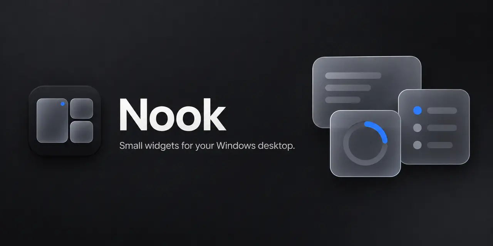

Desktop widgets for Windows.
Notes, timers, weather, tasks, and dev status pinned directly to your Windows desktop wallpaper.

Essential desktop widgets
Zero configuration required to start. Each widget sits cleanly on your desktop, consumes negligible resources, and updates in real time.
Engineered for Windows
Traditional desktop apps sit in your taskbar or Alt+Tab switcher. Nook integrates directly into the Windows desktop shell.
Widgets are attached below standard application windows. Pressing
Win+D (Show Desktop) does not minimize them.
No clutter in your Windows taskbar or Alt+Tab switcher. Nook runs quietly in the notification area.
Single asynchronous Rust background poller with HTTP ETag caching. Idles under 1% CPU usage and approximately 40 MB of memory.
GitHub and Vercel personal access tokens are stored in Windows Credential Manager via the native Win32 keyring API. Never written to disk or logs.
Toggle layout edit mode with a shortcut. Drag widgets anywhere on your multi-monitor setup, snap to grid increments, or drag corners to resize.
Check for updates, review release changelogs, and install new versions with one click directly from the About tab.
Getting started
Install the standard Windows package or build from source using the Rust and Node.js toolchains.
git clone https://github.com/hasanify/nook.git
cd nook
npm install
npm run tauri dev